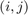
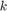
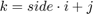
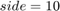
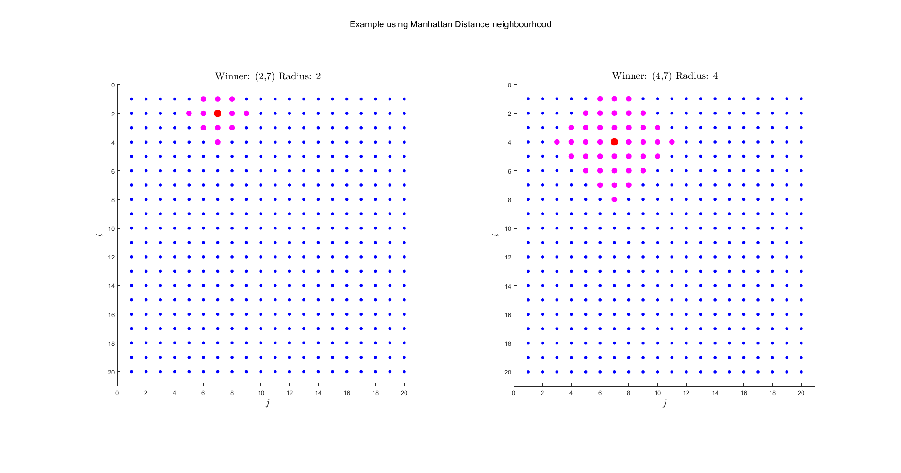
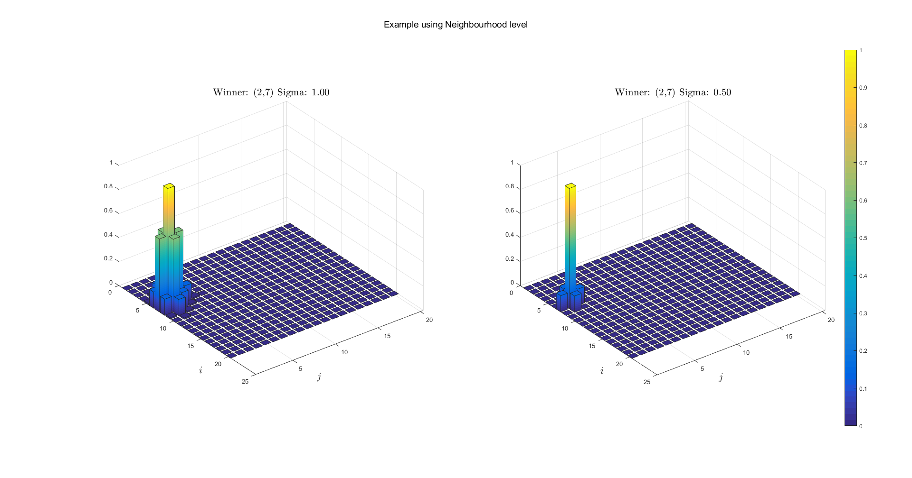

Data Clustering: Votes of MPs
Contents
set(0, 'DefaultFigurePosition', get(0,'screensize')); warning('off', 'MATLAB:mode:EmptyInput') clc; clear; close all;
Introduction
In this exercise we will try to get some insights of the swedish parlia- ment ''political distribution'' by exploring data corresponding to the different MPs (such as their votes, their origins etc.).
In this regard, we will work with variables loaded from politics:
- parties = party membership of each MP
- sex = sex of each MP
- districts = district of each MP
- votes = list of 31 votes for each MP
- names = name of each MP
Plus some additional variables:
- sex_colormap = colormap for sex
- sex_labels = labels for sex
- party_colormap = colormap for party
- party_labels = labels for party
- districts_colormap = colormap for district
For instance, let us display some of these labels for the 10 first MPs.
politics; table(names(1:10), sex_labels(((sex(1:10) + 1)')), ... party_labels(((parties(1:10) + 1)')), districts(1:10), ... 'VariableNames', {'Name', 'Sex', 'Party', 'District'})
ans =
Name Sex Party District
___________________ ________ _____ ________
'Skarman Carl-Erik' 'male' 'm' 1
'Romanus Gabriel' 'male' 'fp' 1
'Odenberg Mikael' 'male' 'm' 1
'Jarrel Henrik S' 'male' 'm' 1
'Lindgren Sylvia' 'female' 's' 1
'Ask Beatrice' 'female' 'm' 1
'Hoffmann Ulla' 'female' 'v' 1
'Nordlander Inger' 'female' 's' 1
'Ruwaida Yvonne' 'female' 'mp' 1
'Konberg Bo' 'male' 'fp' 1
Setup and Topology
Setup
eta = 0.2; num_of_epochs = 1000; [num_of_MP, num_of_votes] = size(votes);
Topology
We will work with a 2D topology in which the units are connected in a grid-like fashion. The neighborhood of a unit is defined by thresholding the manhattan distance between the unit and the others.
From an abstract point of view the units are organized in a 2D square grid, and their coordinates are given by a  pair. In practice, we will assign an index  to every unit so that , where  in this example.
side_of_topologic_grid = 10; num_of_units = side_of_topologic_grid^2; [x, y] = meshgrid(1:side_of_topologic_grid, 1:side_of_topologic_grid); is = reshape(x, 1, num_of_units); js = reshape(y, 1, num_of_units); weights = rand(num_of_units, num_of_votes);
Neighbourhood function
function [ k_neighbors ] = neighborhood2(k, radius, grid_side) %NEIGHBORHOOD2 Function to get the linearized index of the neighbours as a column vector % Input the linearized index of the winner and the threshold. [x, y] = meshgrid(1:grid_side, 1:grid_side); is = reshape(x, 1, grid_side^2); js = reshape(y, 1, grid_side^2); i = is(k); j = js(k); dist = abs(x-i) + abs(y-j); k_neighbors = reshape(dist - radius, grid_side^2, 1) <= 0; end
Example
figure; % Example 1 k_winner = 27; radius = 2; k_neighbors = neighborhood2(k_winner, radius, side_of_topologic_grid); subplot(1,2,1); hold on; plot(js, is, '.b', 'MarkerSize', 15); plot(js(k_neighbors), is(k_neighbors), '.m', 'MarkerSize', 30); plot(js(k_winner), is(k_winner), '.r', 'MarkerSize', 40); title(sprintf('Winner: (%d,%d) Radius: %d', ... is(k_winner), js(k_winner), radius)); axis ij; axis image; xlim([0, side_of_topologic_grid+1]); ylim([0, side_of_topologic_grid+1]); % Example 2 k_winner = 67; radius = 4; k_neighbors = neighborhood2(k_winner, radius, side_of_topologic_grid); subplot(1,2,2); hold on; plot(js, is, '.b', 'MarkerSize', 15); plot(js(k_neighbors), is(k_neighbors), '.m', 'MarkerSize', 30); plot(js(k_winner), is(k_winner), '.r', 'MarkerSize', 40); title(sprintf('Winner: (%d,%d) Radius: %d', ... is(k_winner), js(k_winner), radius)); axis ij; axis image; xlim([0, side_of_topologic_grid+1]); ylim([0, side_of_topologic_grid+1]);
Training
As usual, we diminish the size of the neighborhood as we go through the training epochs. Also we shuffle the MPs at every epoch before presenting them sequentially to the network;
for epoch = 1:num_of_epochs if epoch < .1 * num_of_epochs radius = 4; elseif epoch < .2 * num_of_epochs radius = 3; elseif epoch < .5 * num_of_epochs radius = 2; elseif epoch < .8 * num_of_epochs radius = 1; else radius = 0; end for mp_idx = randperm(num_of_MP) % Find winning unit mp = votes(mp_idx, :); diff = repmat(mp, num_of_units, 1) - weights; dist = sum(diff.^2, 2); [~, k_winner] = min(dist); % Update function (is a col. vector) and update mask (just repeat % it for num_of_votes columns) update_function = repmat( ... neighborhood2(k_winner, radius, side_of_topologic_grid), ... 1, num_of_votes); % Update weights weights = weights + update_function .* (eta * diff); end end
Visualizing
Explanation for sex
- For every unit compute the MPs associated to it, take their sex and put the result in a list associated to that unit.
- Then assign to every unit the color of the most frequent sex in its list.
- Plot the units in the topological space with their color.
clustering = zeros(num_of_MP, 1); sex_freq = cell(num_of_units, 1); party_freq = cell(num_of_units, 1); district_freq = cell(num_of_units, 1); for mp_idx = 1:num_of_MP mp = votes(mp_idx, :); diff = repmat(mp, num_of_units, 1) - weights; dist = sum(diff.^2, 2); [~, k_winning_unit] = min(dist); clustering(mp_idx) = k_winning_unit; sex_freq{k_winning_unit} = [sex_freq{k_winning_unit}, sex(mp_idx)]; party_freq{k_winning_unit} = [party_freq{k_winning_unit}, parties(mp_idx)]; district_freq{k_winning_unit} = [district_freq{k_winning_unit}, districts(mp_idx)]; end sex_img = -1 * ones(num_of_units, 1); party_img = -1 * ones(num_of_units, 1); district_img = -1 * ones(num_of_units, 1); for k = 1:num_of_units sex_img(k) = mode(sex_freq{k}); party_img(k) = mode(party_freq{k}); district_img(k) = mode(district_freq{k}); end figure; subplot(1,3,1); hold on; for s = unique(sex)' scatter(js(sex_img==s), is(sex_img==s), 600, 'filled', ... 'MarkerFaceColor', sex_colormap(s+1,:), ... 'MarkerFaceAlpha',5/8); end title('Most common sex per unit'); axis ij; axis image; xlim([0, side_of_topologic_grid+1]); ylim([0, side_of_topologic_grid+1]); subplot(1,3,2); hold on; for p = unique(parties)' scatter(js(party_img==p), is(party_img==p), 600, 'filled', ... 'MarkerFaceColor', party_colormap(p+1,:), ... 'MarkerFaceAlpha',5/8); end title('Most common party per unit'); axis ij; axis image; xlim([0, side_of_topologic_grid+1]); ylim([0, side_of_topologic_grid+1]); subplot(1,3,3); hold on; for d = unique(districts)' scatter(js(district_img==d), is(district_img==d), 600, 'filled', ... 'MarkerFaceColor', districts_colormap(d,:), ... 'MarkerFaceAlpha',5/8); end title('Most common district per unit'); axis ij; axis image; xlim([0, side_of_topologic_grid+1]); ylim([0, side_of_topologic_grid+1]);
Tables of clusters
Association of every MP to one unit
[~, order] = sort(clustering); t = table(names(order), sex_labels(((sex(order) + 1)')), ... party_labels(((parties(order) + 1)')), ... districts(order), ... clustering(order), ... 'VariableNames',{'Name','Sex','Party','District','Cluster'})
t =
Name Sex Party District Cluster
__________________________________ ________ __________ ________ _______
'Furustrand Reynoldh' 'male' 's' 4 2
'Persson i Simrishamn Goran' 'male' 's' 14 2
'Kjornsberg Arne' 'male' 's' 19 2
'Granstrom Per Erik' 'male' 's' 24 2
'Parssinen Raimo' 'male' 's' 25 2
'Waidelich Tommy' 'male' 's' 2 4
'Wahlstrom Gote' 'male' 's' 6 4
'Jonsson Anita' 'female' 's' 13 4
'Olander Ronny' 'male' 's' 13 4
'Ytterberg Mariann' 'female' 's' 23 4
'Kristiansson Karlstedt Kerstin' 'female' 's' 26 4
'Rojas Mauricio' 'male' 'fp' 1 6
'Pilsater Karin' 'female' 'fp' 2 6
'Acketoft Tina' 'female' 'fp' 12 6
'Ertsborn Jan' 'male' 'fp' 15 6
'Bager Erling' 'male' 'fp' 16 6
'Tysklind Lars' 'male' 'fp' 17 6
'Brodén Anita' 'female' 'fp' 18 6
'Ullenhag Erik' 'male' 'fp' 3 8
'Flyborg Eva' 'female' 'fp' 16 9
'Sabuni Nyamko' 'female' 'fp' 1 10
'Ohlsson Birgitta' 'female' 'fp' 1 10
'Leijonborg Lars' 'male' 'fp' 2 10
'Darvik Axel' 'male' 'fp' 16 10
'Ekstrom Anne-Marie' 'female' 'fp' 19 10
'Fremling Lennart' 'male' 'fp' 24 10
'angstrom Yvonne' 'female' 'fp' 28 10
'Fridolin Gustav' 'male' 'mp' 1 11
'Johansson Anita' 'female' 's' 2 13
'Eneroth Tomas' 'male' 's' 7 13
'Roxbergh Claes' 'male' 'mp' 16 13
'Berglund Nilsson Mona' 'female' 's' 17 13
'Ulvskog Marita' 'female' 's' 24 13
'Johansson Jan Emanuel' 'male' 's' 2 15
'Domeij asa' 'female' 'mp' 3 15
'Adolfsson Elgestam Carina' 'female' 's' 7 15
'Nilsson Annika' 'female' 's' 12 15
'Hogman Berit' 'female' 's' 21 15
'Radstrom Britta' 'female' 's' 28 15
'Franzén Mia' 'female' 'fp' 2 17
'Romanus Gabriel' 'male' 'fp' 1 18
'Konberg Bo' 'male' 'fp' 1 18
'Narti Ana Maria' 'female' 'fp' 1 18
'Hamilton Carl B' 'male' 'fp' 2 18
'Andrén Gunnar' 'male' 'fp' 2 18
'Lundstrom Nina' 'female' 'fp' 2 18
'Andreasson Martin' 'male' 'fp' 2 18
'Darell Linnéa' 'female' 'fp' 5 18
'Krantz Tobias' 'male' 'fp' 6 18
'Thorén Sverker' 'male' 'fp' 8 18
'Berg Heli' 'female' 'fp' 10 18
'Widman Allan' 'male' 'fp' 11 18
'Nilsson Ulf' 'male' 'fp' 13 18
'Wahlgren Marie' 'female' 'fp' 13 18
'Nylander Christer' 'male' 'fp' 14 18
'Kollmats Lennart' 'male' 'fp' 15 18
'Wigstrom Cecilia' 'female' 'fp' 16 18
'Winback Christer' 'male' 'fp' 20 18
'Pehrson Johan' 'male' 'fp' 22 18
'Heinemann Kerstin' 'female' 'fp' 23 18
'Backman Hans' 'male' 'fp' 25 18
'Hellquist Solveig' 'female' 'fp' 26 18
'Gronlund Krantz Anna' 'female' 'fp' 29 18
'Nordmark Gunnar' 'male' 'fp' 7 19
'Hedstrom Lotta' 'female' 'mp' 25 21
'angstrom Lars' 'male' 'mp' 2 22
'Valtersson Mikaela' 'female' 'mp' 2 22
'Ericson Gunvor G' 'female' 'mp' 4 22
'Hillar Rosenqvist Helena' 'female' 'mp' 5 22
'Johansson Mikael' 'male' 'mp' 22 22
'Eriksson Peter' 'male' 'mp' 29 22
'Burman Ingrid' 'female' 'v' 3 24
'Dinamarca Rossana' 'female' 'v' 18 24
'Einarsson Mats' 'male' 'v' 2 26
'astrom Alice' 'female' 'v' 6 26
'Svensson Smith Karin' 'female' 'v' 13 27
'Bargholtz Helena' 'female' 'fp' 2 29
'Wikstrom Cecilia' 'female' 'fp' 3 30
'Ruwaida Yvonne' 'female' 'mp' 1 31
'Holm Ulf' 'male' 'mp' 13 33
'Feltzing Barbro' 'female' 'mp' 18 33
'Bjornlod Leif' 'male' 'mp' 21 33
'Lindholm Jan' 'male' 'mp' 24 33
'Hoffmann Ulla' 'female' 'v' 1 34
'Beijer Lennart' 'male' 'v' 8 34
'Backstrom Lars' 'male' 'v' 17 34
'Engstrom Marie' 'female' 'v' 21 35
'Pedersen Peter' 'male' 'v' 22 35
'Skold Jansson Camilla' 'female' 'v' 27 35
'Hagberg Liselott' 'female' 'fp' 4 38
'Granbom Karin' 'female' 'fp' 5 39
'Strandberg Torkild' 'male' 'fp' 12 39
'Aronson Marita' 'female' 'fp' 17 39
'Lofstrand Johan' 'male' 's' 5 42
'ornfjader Krister' 'male' 's' 8 42
'Astudillo Luciano' 'male' 's' 11 42
'Frisk Helena' 'female' 's' 22 42
'Hogstrom Kenth' 'male' 's' 25 42
'Lilja Lars' 'male' 's' 28 42
'Ohly Lars' 'male' 'v' 1 44
'Larsson Kalle' 'male' 'v' 1 44
'Schyman Gudrun' 'female' 'no party' 2 44
'ozürküt Sermin' 'female' 'v' 2 44
'Lundstrom Sten' 'male' 'v' 11 44
'Karlsson Kjell-Erik' 'male' 'v' 15 44
'Olsson Rolf' 'male' 'v' 16 44
'Rosengren Per' 'male' 'v' 20 44
'Hellberg Owe' 'male' 'v' 25 44
'Holma Siv' 'female' 'v' 29 44
'Linna Elina' 'female' 'v' 4 45
'Sjostrand Sven-Erik' 'male' 'v' 14 45
'Thorborg Karin' 'female' 'v' 23 45
'Wiklund Anders' 'male' 'v' 24 45
'Danestig Britt-Marie' 'female' 'v' 5 46
'Stafilidis Tasso' 'male' 'v' 12 46
'Jóhannesson Berit' 'female' 'v' 16 46
'Wahlén Gunilla' 'female' 'v' 26 46
'Gustavsson Lennart' 'male' 'v' 28 46
'Patriksson Runar' 'male' 'fp' 21 48
'Oscarsson Mikael' 'male' 'kd' 3 50
'Svensson Alf' 'male' 'kd' 6 50
'Skanberg Tuve' 'male' 'kd' 14 50
'Kihlstrom Dan' 'male' 'kd' 21 50
'Lindgren Ulrik' 'male' 'kd' 24 50
'Markstrom Elisebeht' 'female' 's' 4 51
'Nordén Marie' 'female' 's' 27 51
'Lundgren Kerstin' 'female' 'c' 2 52
'Erlandsson Eskil' 'male' 'c' 7 52
'Hansson Agne' 'male' 'c' 8 52
'Andersson Jan' 'male' 'c' 15 52
'Stenmark Rigmor' 'female' 'c' 3 53
'Tiefensee Roger' 'male' 'c' 4 53
'Danielsson Staffan' 'male' 'c' 5 53
'Andersson Margareta' 'female' 'c' 6 53
'Ericson Lars-Ivar' 'male' 'c' 14 53
'Qarlsson Annika' 'female' 'c' 18 53
'Carlsson Birgitta' 'female' 'c' 20 53
'Gerdin Viviann' 'female' 'c' 21 53
'Larsen Sofia' 'female' 'c' 22 53
'Johansson Jorgen' 'male' 'c' 23 53
'Johansson Kenneth' 'male' 'c' 24 53
'Bergstrom Sven' 'male' 'c' 25 53
'Sellén Birgitta' 'female' 'c' 26 53
'Moberg Carina' 'female' 's' 2 57
'Hoij Helena' 'female' 'kd' 1 58
'Svensson Ingvar' 'male' 'kd' 2 58
'Brus Sven' 'male' 'kd' 5 58
'Sandahl Olle' 'male' 'kd' 7 58
'Gylling Johnny' 'male' 'kd' 10 58
'Lantz Kenneth' 'male' 'kd' 12 58
'Althin Peter' 'male' 'kd' 13 58
'Enochson Annelie' 'female' 'kd' 16 58
'Gustafsson Holger' 'male' 'kd' 20 58
'Lindén Lars' 'male' 'kd' 26 58
'Tjernberg Gunilla' 'female' 'kd' 28 58
'Walivaara Erling' 'male' 'kd' 29 58
'Attefall Stefan' 'male' 'kd' 1 59
'Palsson Chatrine' 'female' 'kd' 8 59
'Landgren Per' 'male' 'kd' 16 59
'Runegrund Rosita' 'female' 'kd' 17 59
'Persson Sven Gunnar' 'male' 'kd' 22 59
'Lindstrom Torsten' 'male' 'kd' 23 59
'Marcelind Ragnwi' 'female' 'kd' 25 59
'Wibe Soren' 'male' 's' 28 61
'Fagerstrom Ann-Marie' 'female' 's' 8 62
'Abramsson Karl Gustav' 'male' 's' 28 62
'Larsson Hakan' 'male' 'c' 27 63
'Linander Johan' 'male' 'c' 13 64
'Torstensson asa' 'female' 'c' 17 64
'Vasterteg Claes' 'male' 'c' 19 65
'Reinfeldt Fredrik' 'male' 'm' 2 66
'Bjorling Ewa' 'female' 'm' 2 66
'Persson Catherine' 'female' 's' 13 66
'Jonsson Mona' 'female' 'mp' 17 66
'Vanerlov Ingemar' 'male' 'kd' 18 66
'Fransson Sonja' 'female' 's' 19 66
'Hietala Nordlund Barbro' 'female' 's' 24 66
'Saarinen Ingegerd' 'female' 'mp' 28 66
'Olofsson Maud' 'female' 'c' 28 66
'von der Esch Bjorn' 'male' 'kd' 4 68
'Odenberg Mikael' 'male' 'm' 1 70
'Ask Beatrice' 'female' 'm' 1 70
'Westman Henrik' 'male' 'm' 2 70
'Lofgren Ulla' 'female' 'm' 28 70
'Lindgren Sylvia' 'female' 's' 1 71
'Agenberg Tomas' 'male' 's' 1 71
'Nordquist Kaj' 'male' 's' 1 71
'Hassan Maria' 'female' 's' 1 71
'Frans Joe' 'male' 's' 1 71
'Palm Veronica' 'female' 's' 1 71
'Lejon Britta' 'female' 's' 2 71
'Rask Ola' 'male' 's' 2 71
'Lindberg Niclas' 'male' 's' 2 71
'Arvidsson Eva' 'female' 's' 2 71
'Osman Sherifay Mariam' 'female' 's' 2 71
'Axelsson Christina' 'female' 's' 2 71
'Beiming Cinnika' 'female' 's' 2 71
'Kerimo Yilmaz' 'male' 's' 2 71
'Damberg Mikael' 'male' 's' 2 71
'Tingsgard Tone' 'female' 's' 3 71
'Tesfazion Rezene' 'male' 's' 3 71
'Berglind Mats' 'male' 's' 3 71
'Gille Agneta' 'female' 's' 3 71
'Hagberg Michael' 'male' 's' 4 71
'Bjurling Laila' 'female' 's' 4 71
'Olovsson Fredrik' 'male' 's' 4 71
'Karlsson Sonia' 'female' 's' 5 71
'ohman Conny' 'male' 's' 5 71
'Skoldestig Berndt' 'male' 's' 5 71
'Ludvigsson Anne' 'female' 's' 5 71
'Gustafsson Billy' 'male' 's' 5 71
'Malmstrom Louise' 'female' 's' 5 71
'Nilsson Martin' 'male' 's' 6 71
'Sandgren Margareta' 'female' 's' 6 71
'Hagg Carina' 'female' 's' 6 71
'Petersson Helene' 'female' 's' 6 71
'Wegendal Lars' 'male' 's' 7 71
'Juholt Hakan' 'male' 's' 8 71
'Virgin Lilian' 'female' 's' 9 71
'Gronhagen Carina' 'female' 's' 9 71
'Skoog Christer' 'male' 's' 10 71
'Bjorkman Jan' 'male' 's' 10 71
'Andersson Kerstin' 'female' 's' 10 71
'Larsson Hillevi' 'female' 's' 11 71
'Granlund Marie' 'female' 's' 11 71
'Lindkvist Britt-Marie' 'female' 's' 11 71
'Jakobsson Leif' 'male' 's' 11 71
'Karlsson Anders' 'male' 's' 12 71
'Harstedt Kent' 'male' 's' 12 71
'Hagberg Christin' 'female' 's' 12 71
'Bernhardsson Bo' 'male' 's' 13 71
'Jarl Beck Inger' 'female' 's' 13 71
'Wester Ulla' 'female' 's' 14 71
'Bengtsson Anders' 'male' 's' 14 71
'Engle Kerstin' 'female' 's' 14 71
'Adelsbo Christer' 'male' 's' 14 71
'Eriksson Alf' 'male' 's' 15 71
'Westerlund Panke Majléne' 'female' 's' 15 71
'Sahlberg Par Axel' 'male' 's' 15 71
'Hoff Hans' 'male' 's' 15 71
'Carlstrom Marianne' 'female' 's' 16 71
'Brandin Claes-Goran' 'male' 's' 16 71
'Wittgren-Ahl Siw' 'female' 's' 16 71
'Lindén Rolf' 'male' 's' 16 71
'Johansson Lars' 'male' 's' 16 71
'Carlsson i Hisings Backa Gunilla' 'female' 's' 16 71
'Nilsson Lennart' 'male' 's' 17 71
'Larsson Jan-Olof' 'male' 's' 17 71
'Brakenhielm Catharina' 'female' 's' 17 71
'Forslund Kenneth G' 'male' 's' 17 71
'Bohlin Olsson Britt' 'female' 's' 18 71
'Soderqvist Nils-Erik' 'male' 's' 18 71
'Nenes Christina' 'female' 's' 18 71
'Jonsson Peter' 'male' 's' 18 71
'Nordstrom Kjell' 'male' 's' 20 71
'Green Monica' 'female' 's' 20 71
'Ahlin Urban' 'male' 's' 20 71
'Ohlsson Carina' 'female' 's' 20 71
'Lander Jarl' 'male' 's' 21 71
'Johansson Ann-Kristine' 'female' 's' 21 71
'Pettersson Marina' 'female' 's' 21 71
'Ternemar Tommy' 'male' 's' 21 71
'Lundberg Inger' 'female' 's' 22 71
'Holmqvist Nils-Goran' 'male' 's' 22 71
'Axelsson Lennart' 'male' 's' 22 71
'Ernkrans Matilda' 'female' 's' 22 71
'Magnusson Goran' 'male' 's' 23 71
'Nilsson Pia' 'female' 's' 23 71
'Vallius Paavo' 'male' 's' 23 71
'Kvarnstrom Kurt' 'male' 's' 24 71
'Sarnblad Anneli' 'female' 's' 24 71
'Bohlin Sinikka' 'female' 's' 25 71
'Svensson Per-Olof' 'male' 's' 25 71
'Lindestam asa' 'female' 's' 25 71
'Stenberg Hans' 'male' 's' 26 71
'Lundberg Agneta' 'female' 's' 26 71
'Eberstein Susanne' 'female' 's' 26 71
'Norlander Goran' 'male' 's' 26 71
'Sandberg Gunnar' 'male' 's' 27 71
'Berglund Rune' 'male' 's' 27 71
'Lundberg Carin' 'female' 's' 28 71
'Klockare Lennart' 'male' 's' 29 71
'Zakrisson Kristina' 'female' 's' 29 71
'Ahlqvist Birgitta' 'female' 's' 29 71
'astrom Karin' 'female' 's' 29 71
'Gidblom Birgitta' 'female' 's' 29 71
'oberg Maria' 'female' 's' 29 71
'Nordlander Inger' 'female' 's' 1 73
'Vestlund Borje' 'male' 's' 1 73
'Hammarbergh Krister' 'male' 'm' 29 75
'Odell Mats' 'male' 'kd' 2 77
'Davidson Inger' 'female' 'kd' 2 77
'Andersson Yvonne' 'female' 'kd' 5 77
'Larsson Maria' 'female' 'kd' 6 77
'Gustafsson Lars' 'male' 'kd' 15 78
'Lindgren Else-Marie' 'female' 'kd' 19 78
'Carlsson i Tyreso Gunilla' 'female' 'm' 1 79
'Engstrom Hillevi' 'female' 'm' 2 79
'Johnsson Jeppe' 'male' 'm' 10 79
'Israelsson Margareta' 'female' 's' 23 81
'Ekholm Berndt' 'male' 's' 19 83
'Elmsater-Svard Catharina' 'female' 'm' 2 86
'Hagglund Goran' 'male' 'kd' 6 88
'Axén Gunnar' 'male' 'm' 5 90
'Papadopoulos Nikos' 'male' 's' 1 92
'Ringman Agneta' 'female' 's' 8 92
'Skarman Carl-Erik' 'male' 'm' 1 94
'Jarrel Henrik S' 'male' 'm' 1 94
'Lilliehook Anna' 'female' 'm' 1 94
'Adelsohn Liljeroth Lena' 'female' 'm' 1 94
'Lennmarker Goran' 'male' 'm' 2 94
'Hamilton Bjorn' 'male' 'm' 2 94
'Enstrom Karin' 'female' 'm' 2 94
'Bill Per' 'male' 'm' 3 94
'Westerberg Per' 'male' 'm' 4 94
'Lindgren Anna' 'female' 'm' 5 94
'Hogmark Anders G' 'male' 'm' 7 94
'Aurelius Nils Fredrik' 'male' 'm' 8 94
'Husmark Pehrsson Cristina' 'female' 'm' 12 94
'Lindblad Lars' 'male' 'm' 13 94
'Thalén Finné Ewa' 'female' 'm' 13 94
'Palsson Anne-Marie' 'female' 'm' 13 94
'Ekendahl Maud' 'female' 'm' 14 94
'Palsson Margareta' 'female' 'm' 14 94
'Brodén Anne Marie' 'female' 'm' 15 94
'Lindblad Goran' 'male' 'm' 16 94
'Sidén Anita' 'female' 'm' 16 94
'Magnusson Cecilia' 'female' 'm' 16 94
'Nystrom Elizabeth' 'female' 'm' 18 94
'Widegren Cecilia' 'female' 'm' 20 94
'Radhstrom Jan-Evert' 'male' 'm' 21 94
'Hogstrom Tomas' 'male' 'm' 23 94
'Gunnarsson Rolf' 'male' 'm' 24 94
'Kjellberg Bertil' 'male' 'm' 26 94
'Sundell Ola' 'male' 'm' 27 94
'Hedquist Lennart' 'male' 'm' 3 95
'Roslund Carl-Axel' 'male' 'm' 11 95
'Olsson Kent' 'male' 'm' 17 97
'Sjosten Ulf' 'male' 'm' 19 97
'de Pourbaix-Lundin Marietta' 'female' 'm' 2 99
'Hagfeldt Stefan' 'male' 'm' 5 99
'Andersson Magdalena' 'female' 'm' 6 99
'Johansson Bengt-Anders' 'male' 'm' 6 99
'Billstrom Tobias' 'male' 'm' 11 99
'Danielsson Peter' 'male' 'm' 12 99
'Tolgfors Sten' 'male' 'm' 22 99
'Norinder Patrik' 'male' 'm' 25 99
'von Sydow Henrik' 'male' 'm' 15 100
'René Inger' 'female' 'm' 17 100
Clusters with 4 ore more MPs
for cl = unique(clustering)' if (sum(clustering(order) == cl) > 3) t(clustering(order) == cl, 1:5) end end
ans =
Name Sex Party District Cluster
____________________________ ______ _____ ________ _______
'Furustrand Reynoldh' 'male' 's' 4 2
'Persson i Simrishamn Goran' 'male' 's' 14 2
'Kjornsberg Arne' 'male' 's' 19 2
'Granstrom Per Erik' 'male' 's' 24 2
'Parssinen Raimo' 'male' 's' 25 2
ans =
Name Sex Party District Cluster
________________________________ ________ _____ ________ _______
'Waidelich Tommy' 'male' 's' 2 4
'Wahlstrom Gote' 'male' 's' 6 4
'Jonsson Anita' 'female' 's' 13 4
'Olander Ronny' 'male' 's' 13 4
'Ytterberg Mariann' 'female' 's' 23 4
'Kristiansson Karlstedt Kerstin' 'female' 's' 26 4
ans =
Name Sex Party District Cluster
________________ ________ _____ ________ _______
'Rojas Mauricio' 'male' 'fp' 1 6
'Pilsater Karin' 'female' 'fp' 2 6
'Acketoft Tina' 'female' 'fp' 12 6
'Ertsborn Jan' 'male' 'fp' 15 6
'Bager Erling' 'male' 'fp' 16 6
'Tysklind Lars' 'male' 'fp' 17 6
'Brodén Anita' 'female' 'fp' 18 6
ans =
Name Sex Party District Cluster
____________________ ________ _____ ________ _______
'Sabuni Nyamko' 'female' 'fp' 1 10
'Ohlsson Birgitta' 'female' 'fp' 1 10
'Leijonborg Lars' 'male' 'fp' 2 10
'Darvik Axel' 'male' 'fp' 16 10
'Ekstrom Anne-Marie' 'female' 'fp' 19 10
'Fremling Lennart' 'male' 'fp' 24 10
'angstrom Yvonne' 'female' 'fp' 28 10
ans =
Name Sex Party District Cluster
_______________________ ________ _____ ________ _______
'Johansson Anita' 'female' 's' 2 13
'Eneroth Tomas' 'male' 's' 7 13
'Roxbergh Claes' 'male' 'mp' 16 13
'Berglund Nilsson Mona' 'female' 's' 17 13
'Ulvskog Marita' 'female' 's' 24 13
ans =
Name Sex Party District Cluster
___________________________ ________ _____ ________ _______
'Johansson Jan Emanuel' 'male' 's' 2 15
'Domeij asa' 'female' 'mp' 3 15
'Adolfsson Elgestam Carina' 'female' 's' 7 15
'Nilsson Annika' 'female' 's' 12 15
'Hogman Berit' 'female' 's' 21 15
'Radstrom Britta' 'female' 's' 28 15
ans =
Name Sex Party District Cluster
______________________ ________ _____ ________ _______
'Romanus Gabriel' 'male' 'fp' 1 18
'Konberg Bo' 'male' 'fp' 1 18
'Narti Ana Maria' 'female' 'fp' 1 18
'Hamilton Carl B' 'male' 'fp' 2 18
'Andrén Gunnar' 'male' 'fp' 2 18
'Lundstrom Nina' 'female' 'fp' 2 18
'Andreasson Martin' 'male' 'fp' 2 18
'Darell Linnéa' 'female' 'fp' 5 18
'Krantz Tobias' 'male' 'fp' 6 18
'Thorén Sverker' 'male' 'fp' 8 18
'Berg Heli' 'female' 'fp' 10 18
'Widman Allan' 'male' 'fp' 11 18
'Nilsson Ulf' 'male' 'fp' 13 18
'Wahlgren Marie' 'female' 'fp' 13 18
'Nylander Christer' 'male' 'fp' 14 18
'Kollmats Lennart' 'male' 'fp' 15 18
'Wigstrom Cecilia' 'female' 'fp' 16 18
'Winback Christer' 'male' 'fp' 20 18
'Pehrson Johan' 'male' 'fp' 22 18
'Heinemann Kerstin' 'female' 'fp' 23 18
'Backman Hans' 'male' 'fp' 25 18
'Hellquist Solveig' 'female' 'fp' 26 18
'Gronlund Krantz Anna' 'female' 'fp' 29 18
ans =
Name Sex Party District Cluster
__________________________ ________ _____ ________ _______
'angstrom Lars' 'male' 'mp' 2 22
'Valtersson Mikaela' 'female' 'mp' 2 22
'Ericson Gunvor G' 'female' 'mp' 4 22
'Hillar Rosenqvist Helena' 'female' 'mp' 5 22
'Johansson Mikael' 'male' 'mp' 22 22
'Eriksson Peter' 'male' 'mp' 29 22
ans =
Name Sex Party District Cluster
_________________ ________ _____ ________ _______
'Holm Ulf' 'male' 'mp' 13 33
'Feltzing Barbro' 'female' 'mp' 18 33
'Bjornlod Leif' 'male' 'mp' 21 33
'Lindholm Jan' 'male' 'mp' 24 33
ans =
Name Sex Party District Cluster
___________________ ________ _____ ________ _______
'Lofstrand Johan' 'male' 's' 5 42
'ornfjader Krister' 'male' 's' 8 42
'Astudillo Luciano' 'male' 's' 11 42
'Frisk Helena' 'female' 's' 22 42
'Hogstrom Kenth' 'male' 's' 25 42
'Lilja Lars' 'male' 's' 28 42
ans =
Name Sex Party District Cluster
_____________________ ________ __________ ________ _______
'Ohly Lars' 'male' 'v' 1 44
'Larsson Kalle' 'male' 'v' 1 44
'Schyman Gudrun' 'female' 'no party' 2 44
'ozürküt Sermin' 'female' 'v' 2 44
'Lundstrom Sten' 'male' 'v' 11 44
'Karlsson Kjell-Erik' 'male' 'v' 15 44
'Olsson Rolf' 'male' 'v' 16 44
'Rosengren Per' 'male' 'v' 20 44
'Hellberg Owe' 'male' 'v' 25 44
'Holma Siv' 'female' 'v' 29 44
ans =
Name Sex Party District Cluster
_____________________ ________ _____ ________ _______
'Linna Elina' 'female' 'v' 4 45
'Sjostrand Sven-Erik' 'male' 'v' 14 45
'Thorborg Karin' 'female' 'v' 23 45
'Wiklund Anders' 'male' 'v' 24 45
ans =
Name Sex Party District Cluster
______________________ ________ _____ ________ _______
'Danestig Britt-Marie' 'female' 'v' 5 46
'Stafilidis Tasso' 'male' 'v' 12 46
'Jóhannesson Berit' 'female' 'v' 16 46
'Wahlén Gunilla' 'female' 'v' 26 46
'Gustavsson Lennart' 'male' 'v' 28 46
ans =
Name Sex Party District Cluster
__________________ ______ _____ ________ _______
'Oscarsson Mikael' 'male' 'kd' 3 50
'Svensson Alf' 'male' 'kd' 6 50
'Skanberg Tuve' 'male' 'kd' 14 50
'Kihlstrom Dan' 'male' 'kd' 21 50
'Lindgren Ulrik' 'male' 'kd' 24 50
ans =
Name Sex Party District Cluster
__________________ ________ _____ ________ _______
'Lundgren Kerstin' 'female' 'c' 2 52
'Erlandsson Eskil' 'male' 'c' 7 52
'Hansson Agne' 'male' 'c' 8 52
'Andersson Jan' 'male' 'c' 15 52
ans =
Name Sex Party District Cluster
_____________________ ________ _____ ________ _______
'Stenmark Rigmor' 'female' 'c' 3 53
'Tiefensee Roger' 'male' 'c' 4 53
'Danielsson Staffan' 'male' 'c' 5 53
'Andersson Margareta' 'female' 'c' 6 53
'Ericson Lars-Ivar' 'male' 'c' 14 53
'Qarlsson Annika' 'female' 'c' 18 53
'Carlsson Birgitta' 'female' 'c' 20 53
'Gerdin Viviann' 'female' 'c' 21 53
'Larsen Sofia' 'female' 'c' 22 53
'Johansson Jorgen' 'male' 'c' 23 53
'Johansson Kenneth' 'male' 'c' 24 53
'Bergstrom Sven' 'male' 'c' 25 53
'Sellén Birgitta' 'female' 'c' 26 53
ans =
Name Sex Party District Cluster
___________________ ________ _____ ________ _______
'Hoij Helena' 'female' 'kd' 1 58
'Svensson Ingvar' 'male' 'kd' 2 58
'Brus Sven' 'male' 'kd' 5 58
'Sandahl Olle' 'male' 'kd' 7 58
'Gylling Johnny' 'male' 'kd' 10 58
'Lantz Kenneth' 'male' 'kd' 12 58
'Althin Peter' 'male' 'kd' 13 58
'Enochson Annelie' 'female' 'kd' 16 58
'Gustafsson Holger' 'male' 'kd' 20 58
'Lindén Lars' 'male' 'kd' 26 58
'Tjernberg Gunilla' 'female' 'kd' 28 58
'Walivaara Erling' 'male' 'kd' 29 58
ans =
Name Sex Party District Cluster
_____________________ ________ _____ ________ _______
'Attefall Stefan' 'male' 'kd' 1 59
'Palsson Chatrine' 'female' 'kd' 8 59
'Landgren Per' 'male' 'kd' 16 59
'Runegrund Rosita' 'female' 'kd' 17 59
'Persson Sven Gunnar' 'male' 'kd' 22 59
'Lindstrom Torsten' 'male' 'kd' 23 59
'Marcelind Ragnwi' 'female' 'kd' 25 59
ans =
Name Sex Party District Cluster
_________________________ ________ _____ ________ _______
'Reinfeldt Fredrik' 'male' 'm' 2 66
'Bjorling Ewa' 'female' 'm' 2 66
'Persson Catherine' 'female' 's' 13 66
'Jonsson Mona' 'female' 'mp' 17 66
'Vanerlov Ingemar' 'male' 'kd' 18 66
'Fransson Sonja' 'female' 's' 19 66
'Hietala Nordlund Barbro' 'female' 's' 24 66
'Saarinen Ingegerd' 'female' 'mp' 28 66
'Olofsson Maud' 'female' 'c' 28 66
ans =
Name Sex Party District Cluster
_________________ ________ _____ ________ _______
'Odenberg Mikael' 'male' 'm' 1 70
'Ask Beatrice' 'female' 'm' 1 70
'Westman Henrik' 'male' 'm' 2 70
'Lofgren Ulla' 'female' 'm' 28 70
ans =
Name Sex Party District Cluster
__________________________________ ________ _____ ________ _______
'Lindgren Sylvia' 'female' 's' 1 71
'Agenberg Tomas' 'male' 's' 1 71
'Nordquist Kaj' 'male' 's' 1 71
'Hassan Maria' 'female' 's' 1 71
'Frans Joe' 'male' 's' 1 71
'Palm Veronica' 'female' 's' 1 71
'Lejon Britta' 'female' 's' 2 71
'Rask Ola' 'male' 's' 2 71
'Lindberg Niclas' 'male' 's' 2 71
'Arvidsson Eva' 'female' 's' 2 71
'Osman Sherifay Mariam' 'female' 's' 2 71
'Axelsson Christina' 'female' 's' 2 71
'Beiming Cinnika' 'female' 's' 2 71
'Kerimo Yilmaz' 'male' 's' 2 71
'Damberg Mikael' 'male' 's' 2 71
'Tingsgard Tone' 'female' 's' 3 71
'Tesfazion Rezene' 'male' 's' 3 71
'Berglind Mats' 'male' 's' 3 71
'Gille Agneta' 'female' 's' 3 71
'Hagberg Michael' 'male' 's' 4 71
'Bjurling Laila' 'female' 's' 4 71
'Olovsson Fredrik' 'male' 's' 4 71
'Karlsson Sonia' 'female' 's' 5 71
'ohman Conny' 'male' 's' 5 71
'Skoldestig Berndt' 'male' 's' 5 71
'Ludvigsson Anne' 'female' 's' 5 71
'Gustafsson Billy' 'male' 's' 5 71
'Malmstrom Louise' 'female' 's' 5 71
'Nilsson Martin' 'male' 's' 6 71
'Sandgren Margareta' 'female' 's' 6 71
'Hagg Carina' 'female' 's' 6 71
'Petersson Helene' 'female' 's' 6 71
'Wegendal Lars' 'male' 's' 7 71
'Juholt Hakan' 'male' 's' 8 71
'Virgin Lilian' 'female' 's' 9 71
'Gronhagen Carina' 'female' 's' 9 71
'Skoog Christer' 'male' 's' 10 71
'Bjorkman Jan' 'male' 's' 10 71
'Andersson Kerstin' 'female' 's' 10 71
'Larsson Hillevi' 'female' 's' 11 71
'Granlund Marie' 'female' 's' 11 71
'Lindkvist Britt-Marie' 'female' 's' 11 71
'Jakobsson Leif' 'male' 's' 11 71
'Karlsson Anders' 'male' 's' 12 71
'Harstedt Kent' 'male' 's' 12 71
'Hagberg Christin' 'female' 's' 12 71
'Bernhardsson Bo' 'male' 's' 13 71
'Jarl Beck Inger' 'female' 's' 13 71
'Wester Ulla' 'female' 's' 14 71
'Bengtsson Anders' 'male' 's' 14 71
'Engle Kerstin' 'female' 's' 14 71
'Adelsbo Christer' 'male' 's' 14 71
'Eriksson Alf' 'male' 's' 15 71
'Westerlund Panke Majléne' 'female' 's' 15 71
'Sahlberg Par Axel' 'male' 's' 15 71
'Hoff Hans' 'male' 's' 15 71
'Carlstrom Marianne' 'female' 's' 16 71
'Brandin Claes-Goran' 'male' 's' 16 71
'Wittgren-Ahl Siw' 'female' 's' 16 71
'Lindén Rolf' 'male' 's' 16 71
'Johansson Lars' 'male' 's' 16 71
'Carlsson i Hisings Backa Gunilla' 'female' 's' 16 71
'Nilsson Lennart' 'male' 's' 17 71
'Larsson Jan-Olof' 'male' 's' 17 71
'Brakenhielm Catharina' 'female' 's' 17 71
'Forslund Kenneth G' 'male' 's' 17 71
'Bohlin Olsson Britt' 'female' 's' 18 71
'Soderqvist Nils-Erik' 'male' 's' 18 71
'Nenes Christina' 'female' 's' 18 71
'Jonsson Peter' 'male' 's' 18 71
'Nordstrom Kjell' 'male' 's' 20 71
'Green Monica' 'female' 's' 20 71
'Ahlin Urban' 'male' 's' 20 71
'Ohlsson Carina' 'female' 's' 20 71
'Lander Jarl' 'male' 's' 21 71
'Johansson Ann-Kristine' 'female' 's' 21 71
'Pettersson Marina' 'female' 's' 21 71
'Ternemar Tommy' 'male' 's' 21 71
'Lundberg Inger' 'female' 's' 22 71
'Holmqvist Nils-Goran' 'male' 's' 22 71
'Axelsson Lennart' 'male' 's' 22 71
'Ernkrans Matilda' 'female' 's' 22 71
'Magnusson Goran' 'male' 's' 23 71
'Nilsson Pia' 'female' 's' 23 71
'Vallius Paavo' 'male' 's' 23 71
'Kvarnstrom Kurt' 'male' 's' 24 71
'Sarnblad Anneli' 'female' 's' 24 71
'Bohlin Sinikka' 'female' 's' 25 71
'Svensson Per-Olof' 'male' 's' 25 71
'Lindestam asa' 'female' 's' 25 71
'Stenberg Hans' 'male' 's' 26 71
'Lundberg Agneta' 'female' 's' 26 71
'Eberstein Susanne' 'female' 's' 26 71
'Norlander Goran' 'male' 's' 26 71
'Sandberg Gunnar' 'male' 's' 27 71
'Berglund Rune' 'male' 's' 27 71
'Lundberg Carin' 'female' 's' 28 71
'Klockare Lennart' 'male' 's' 29 71
'Zakrisson Kristina' 'female' 's' 29 71
'Ahlqvist Birgitta' 'female' 's' 29 71
'astrom Karin' 'female' 's' 29 71
'Gidblom Birgitta' 'female' 's' 29 71
'oberg Maria' 'female' 's' 29 71
ans =
Name Sex Party District Cluster
__________________ ________ _____ ________ _______
'Odell Mats' 'male' 'kd' 2 77
'Davidson Inger' 'female' 'kd' 2 77
'Andersson Yvonne' 'female' 'kd' 5 77
'Larsson Maria' 'female' 'kd' 6 77
ans =
Name Sex Party District Cluster
___________________________ ________ _____ ________ _______
'Skarman Carl-Erik' 'male' 'm' 1 94
'Jarrel Henrik S' 'male' 'm' 1 94
'Lilliehook Anna' 'female' 'm' 1 94
'Adelsohn Liljeroth Lena' 'female' 'm' 1 94
'Lennmarker Goran' 'male' 'm' 2 94
'Hamilton Bjorn' 'male' 'm' 2 94
'Enstrom Karin' 'female' 'm' 2 94
'Bill Per' 'male' 'm' 3 94
'Westerberg Per' 'male' 'm' 4 94
'Lindgren Anna' 'female' 'm' 5 94
'Hogmark Anders G' 'male' 'm' 7 94
'Aurelius Nils Fredrik' 'male' 'm' 8 94
'Husmark Pehrsson Cristina' 'female' 'm' 12 94
'Lindblad Lars' 'male' 'm' 13 94
'Thalén Finné Ewa' 'female' 'm' 13 94
'Palsson Anne-Marie' 'female' 'm' 13 94
'Ekendahl Maud' 'female' 'm' 14 94
'Palsson Margareta' 'female' 'm' 14 94
'Brodén Anne Marie' 'female' 'm' 15 94
'Lindblad Goran' 'male' 'm' 16 94
'Sidén Anita' 'female' 'm' 16 94
'Magnusson Cecilia' 'female' 'm' 16 94
'Nystrom Elizabeth' 'female' 'm' 18 94
'Widegren Cecilia' 'female' 'm' 20 94
'Radhstrom Jan-Evert' 'male' 'm' 21 94
'Hogstrom Tomas' 'male' 'm' 23 94
'Gunnarsson Rolf' 'male' 'm' 24 94
'Kjellberg Bertil' 'male' 'm' 26 94
'Sundell Ola' 'male' 'm' 27 94
ans =
Name Sex Party District Cluster
_____________________________ ________ _____ ________ _______
'de Pourbaix-Lundin Marietta' 'female' 'm' 2 99
'Hagfeldt Stefan' 'male' 'm' 5 99
'Andersson Magdalena' 'female' 'm' 6 99
'Johansson Bengt-Anders' 'male' 'm' 6 99
'Billstrom Tobias' 'male' 'm' 11 99
'Danielsson Peter' 'male' 'm' 12 99
'Tolgfors Sten' 'male' 'm' 22 99
'Norinder Patrik' 'male' 'm' 25 99
close all;